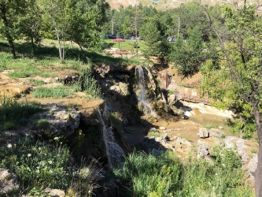

İl merkezine 7 km. uzaklıktaki Paşa Fabrikası ağaçlık ve akarsuyu bulunan bir mesire yeridir. Bu mesire yerinde 1960 yılında iki yapay göl oluşturulmuştur. Bu mesire yerinde turistik tesisler bulunmaktadır. Son yıllarda yapılan düzenlemelerle cazibe merkezi haline getirilmektedir.
 devamı için tıklayınız